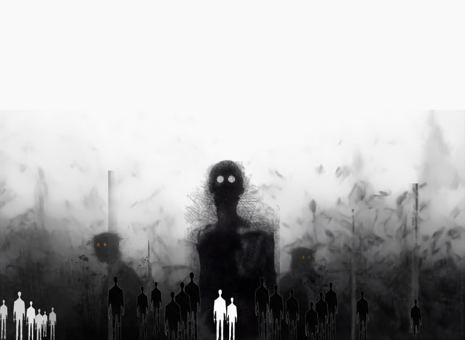

“The town has run this cycle before. It will run it again.”
Can a group extract truth from noise — while the noise is actively lying to them, while their own senses are unreliable, and while the most trustworthy person among them may be the thing trying to kill them?
Every other survival-horror game is a test of reflexes and resource management. No Way Out is a test of epistemology under social pressure. The monsters, the talismans, the long night — all of it is the surface. The real game happens one layer beneath, in the question of what is real and who can be believed.
The laws are constant. The board is never the same twice — like chess. There is always a correct line of play. It simply hides inside the noise until someone strong enough sees it.
Players are not merely allowed real-world knowledge — they are expected to use it. Search engines, encyclopedias, LLMs, translation tools, cipher references. The long clues push you out of the game to learn what something is — then back, to reason about what it means here.
The tool you trust carries its own poison. An LLM hallucinates confidently — a beautifully structured answer that is subtly, fatally wrong. Mapped onto tonight's cycle it becomes a fraud chain that feels like progress until the safehouse barriers silently fail. The game teaches the correct use of intelligence by punishing the incorrect use.
No wiki can do this for you. No model can do this for you. The community hands you tools — the final move is always yours.
they want escape · they want the truth
the system's intelligence, wearing a human face
freedom from the creatures
containment · to feed
The town is not a neutral map. It is a fellow prisoner — trapped longer than any survivor, desperate for the same freedom. It cannot speak. It can only reduce friction when you move toward the correct pattern.
A stuck door becomes openable. A creature looks away at the right moment. The fog thins along one path. Not rescue — a lowering of resistance.
Not punishment — withdrawal. The signs simply stop. The town goes neutral and quiet, and the world returns to full indifference. The silence is the warning.
Assistance is individual-origin. Strong players receive signs; the weak receive silence. Stand beside someone strong, and you witness what they witness — which is why who you keep close is itself a mechanic.
Long clues are built from real history, myth, and cipher. You leave the game to learn what a thing is — then return to reason what it means tonight.
Beings of “smokeless fire.”
Ice warnings, filed and ignored.
A colony gone. One word carved.
A book no one alive can read.
Solved once. Permanent.
Knowing it is Fibonacci never solves the game — it hands you a tool. The lock changes every cycle. Googleable in seconds; the meaning takes an hour.
Dreams are the bootstrap — the town's only channel for the first signal. To receive it you must risk sleep, fainting in sudden daylight, or hallucinogenic flora. The dream is not safe, and it is not honest by default.
Research them in the waking world. Their meaning belongs to this cycle — never the last.
Sleep unprotected and an entity slips inside the bootstrap itself — whispering false numbers, beginning a fraud chain from the very first signal you ever receive.
Harm taken in the dream is not contained by it.
A slash from a creature in the vision opens as a real laceration on the sleeping body — in real time. The team watches a wound appear from nothing.
No auto-heal, no lockout. They burn their last real medicine on an invisible wound while the dreamer convulses in the dirt —
proof the dream was real. Never proof the clue was true.
Recognized as aligned, you cannot die here. The instant before fatal harm, the town snaps you awake with a gasp. The minor wounds remain — carried back as proof.
Force a vision you have not earned and no hand reaches in. Your body bleeds out and dies — while your team spends its last medicine trying to save someone the town already judged.
The cruelest death in the game is reserved for the confident.
Strength is discernment, not authority. The town gave them sight. The entities turn that sight into a wound.
Your closest ally believes a hallucination with their whole heart — and walks into the trees alone, at dusk, begging you to follow.
Genuine all session. Found at night. Turned at 02:00. They hand you the final piece at 05:00 — and it feels real, because the trust is.
The town signals GO. The correct line is clear. But walking it means exposing the one person standing beside you.
Clarity is the wound. You see — therefore they take.
He is not a monster. He is a person — beautiful, charismatic, magnetic. The figure everyone wants beside them. And he is already inside the wall.
He does not spawn. He arrives the moment a strong player is recognized — summoned by your own strength.
He felt the town respond, so he knows what you found. He speaks your language and holds your next piece.
The town never helps him. Alone in a room, it goes silent — not hostile, just withdrawn. Easy to miss. Impossible to act on without proof.
Act on instinct and the team brands you paranoid and exiles you. Wait for proof and the window closes. He neutralizes the strongest player without firing a shot.
Unchanged from canon. Nocturnal, talisman-gated, merciless. They wear your friends' voices at the door — and the despair they manufacture each night is the bait that makes him irresistible by dawn.
Morning discipline buys afternoon options — which buy night survival.

The monsters hit the same in every mode. What scales is how much the game tells you what is true — the volume of scaffolding: labels, confirmations, telegraphed fraud, visible tells.
It is called REAL because reality provides no labels, no confirmations, and no honest sources.
Solve the structural map. Sacrifice the ancient artifacts at the radio tower and lighthouse. Synchronize the escape across the faraway trees. Fail mid-execution and the team is wiped instantly.
Stop running. Track the creatures to their resting chambers, harvest their toxins into weapons, and raid the nest to burn the predatory code out of the cycle entirely.
But the Purge is navigated by mushroom-induced visions — the most compromised sight in the game — and the Man in Yellow holds a key role inside the raid. You march into the dark on a hallucination, with the system's greatest weapon at your shoulder, calling it victory.
In a game where the noise is always lying,
how do you know that winning is not the last fraud chain?
A 38-minute recording surfaced alongside the design document — two unidentified analysts working through the full system, cycle by cycle. Unclear who recorded it, or why. The transcript is reproduced below.
“Your best friend in the room with you might actually be a paid actor trying to steer you into a trap. Which is such a wild concept.”
“It's exactly like following your GPS directly into a lake because you trusted the machine's voice over your own eyes.”
“The strong player is effectively a human lie detector — reading which clues are genuine, which players are genuine.”
“In a game where the noise is always lying — how can you ever be certain that winning isn't just the final inescapable trap?”
Transcript timing is reconstructed from speech pacing, not extracted captioning — treat timestamps as approximate. Audio plays in-browser; nothing is sent anywhere.
Can a group still find the truth anyway?